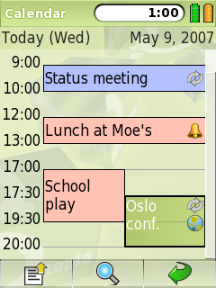

|
Home · All Namespaces · All Classes · Grouped Classes · Modules · Functions | |
The QAppointmentDelegate class provides drawing of QAppointmentModel items (QAppointments). More...
#include <QAppointmentDelegate>
Inherits QAbstractItemDelegate.
The QAppointmentDelegate class provides drawing of QAppointmentModel items (QAppointments).
By using QAppointmentDelegate, applications dealing with QAppointments can achieve a consistent look and feel.
QAppointments are drawn with two sections per item. There are optional icons on the right side of the rendered item, and text on the left. The text and icons are rendered vertically centred within the item if there is enough space. The icons are rendered starting at the top right, in a top-to-bottom, right-to-left fashion.
The following image illustrates a collection of QAppointments being displayed by an application.

It is assumed that the model is a QAppointmentModel. The roles used to draw the items include:
| Role | Data Type | Description |
|---|---|---|
| Qt::DisplayRole | QString | Plain unformatted text drawn on the left of the icon, wrapped to any icons. |
| Qt::DecorationRole | QList<QIcon> | Optional. Drawn on the right side of the item, top-to-bottom, right-to-left |
The four appointments shown in the picture above have the following data in the model:
| DisplayRole | DecorationRole |
|---|---|
| Status meeting | List with a single icon for recurrence |
| Lunch at Moe's | List with a single icon for a reminder |
| School play | <empty list> |
| Oslo conf. | List with two icons:
|
Selected appointments are rendered with the current palette's Highlight color), while unselected appointments are rendered with the Button color.
See also QAppointment, QAppointmentModel, and Pim Library.
Constructs a QAppointmentDelegate with the given parent.
Destroys a QAppointmentDelegate.
| Copyright © 2009 Trolltech | Trademarks | Qt Extended 4.4.3 |